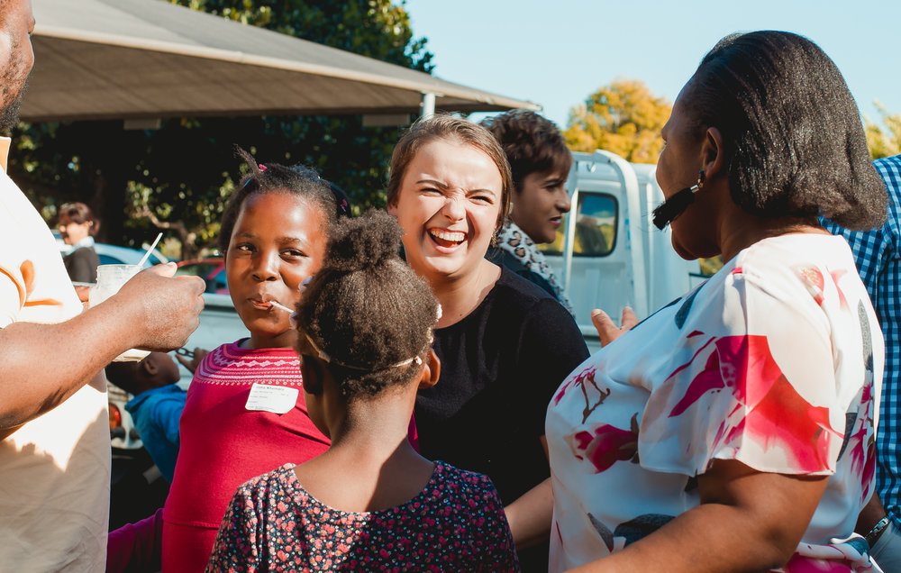

Outreach
KwaCare
KwaCare was founded in 1995 in an effort to reach our local community – Kwadabeka.
KwaDabeka is a township community (urban slum) near Durban (in KwaZulu Natal, South Africa). The community was developed in the 1960s as a temporary settlement for migrant laborers. Today more than 100,000 people live here. Many families live below the poverty line in shacks and other makeshift homes with no running water or electricity.
Unemployment, sickness, lack of service delivery and crime make it difficult for people to break the devastating cycle of poverty in their lives.
Across South Africa, stats show that half of the students who start a schooling career aren’t able to complete it and this is damaging futures everywhere.
Local Outreach
His Church London is based in Kingston Upon Thames, Surrey.
As a church, we are passionate about seeing our local community thrive.
Our members and staff have been involved in several drives and initiatives to assits the vulnerable in our community for 16 years.
We hope to serve as best we can, whenever we can!
